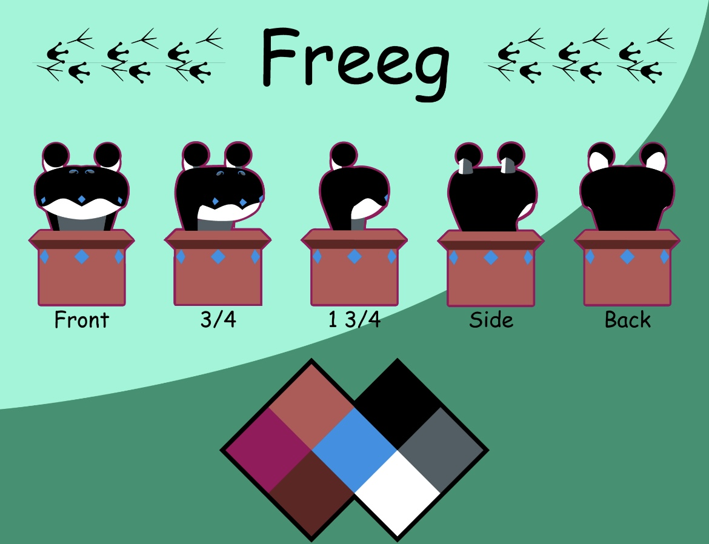

Character Design
This is a character design that I made called Freeg. Freeg is a simple creature, merely just trying to survive day to day and trying to get enough food for the day. He’s usually content with absorbing nutrients from the ground, due to him being a big pacifist, as well as being socially anxious. However, if Freeg can’t get any nutrients from the ground, he is willing to hunt and ambush in order to eat. He also has been getting into wood carving, using his drool in order to eat away chunks of wood. This ends up with very organic-looking, unique, and sometimes sharp sculptures.